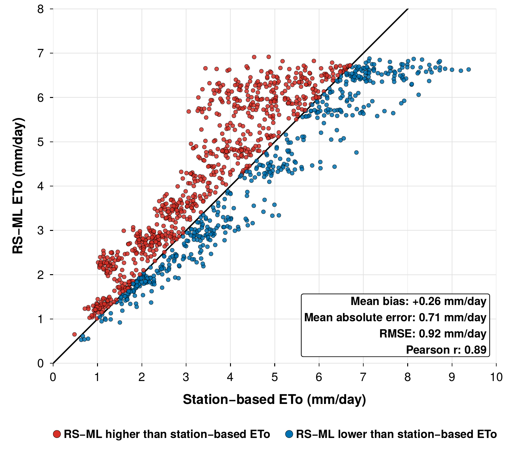
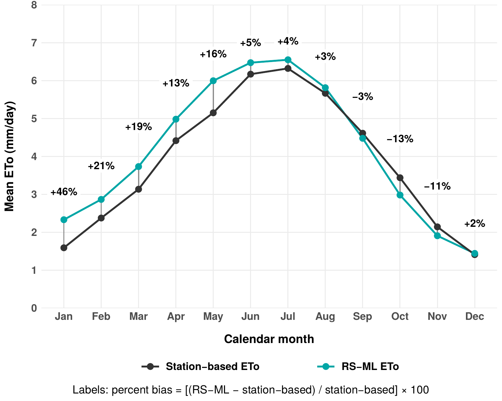
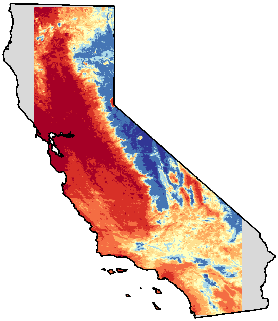
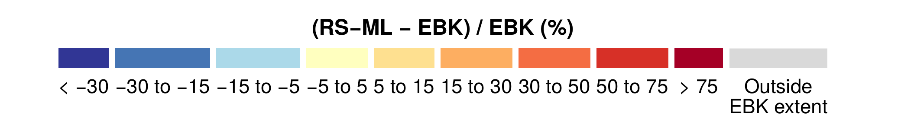
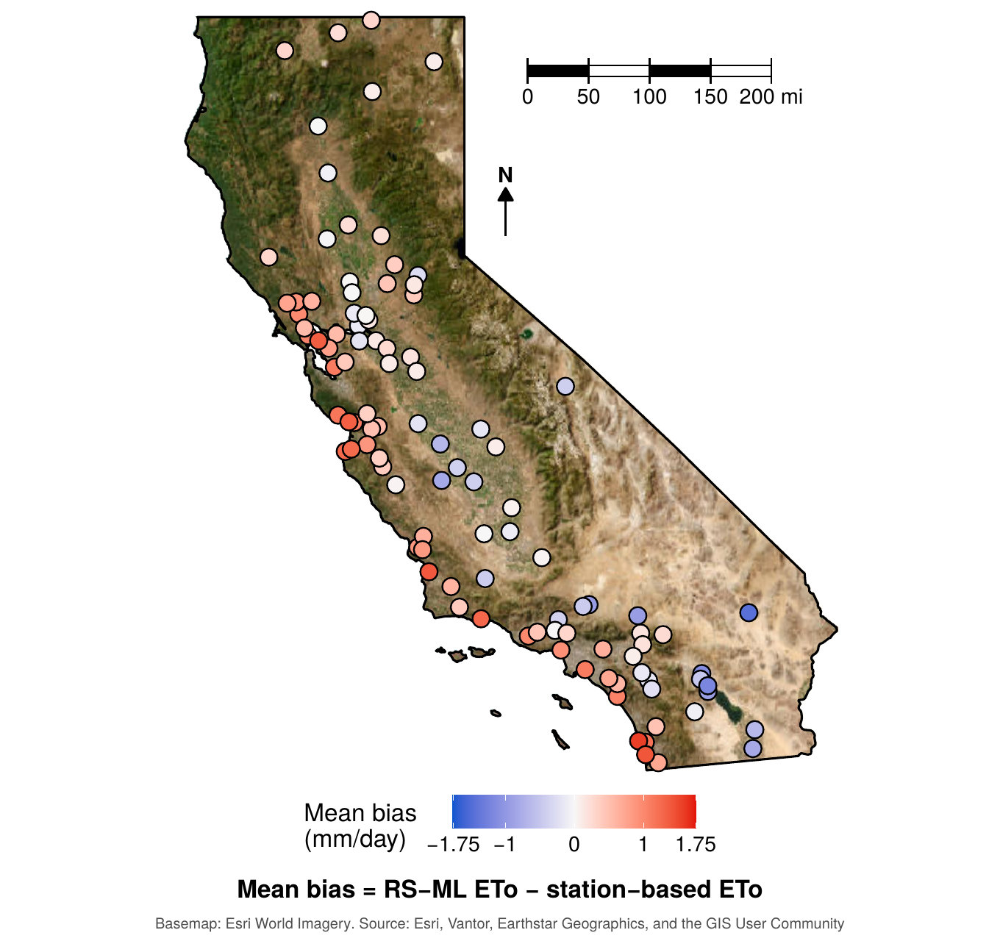
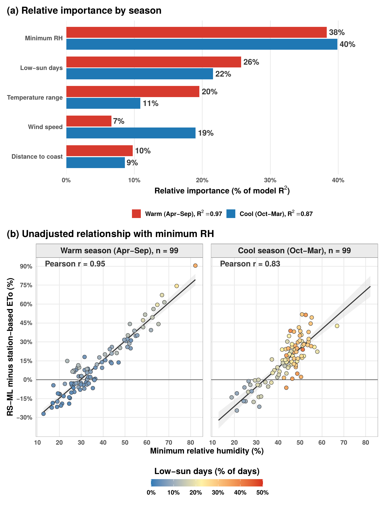
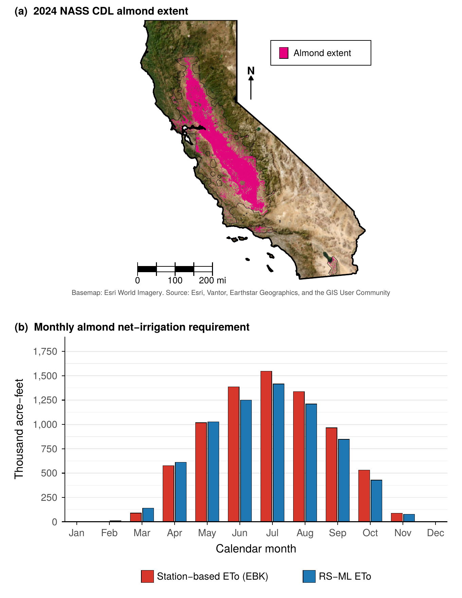

Can a satellite stand in for a weather station?
My master's thesis tests whether a satellite-based machine learning model can estimate the air's thirst across California as well as the state's weather-station network, and what the difference means for the water budgets farms and agencies rely on.
How I got here
-
01
Starting close to home
I wanted my research to be useful to farmers, so I started in the Salinas Valley, a place that has always mattered to me. My first plan was a water footprint assessment: how much water goes into the crops grown there, and where it comes from.
-
02
The missing piece
I quickly hit a wall. There's no easy way to measure how much water actually goes to irrigation. Pumping records show how much groundwater was paid for, but not where in the valley it was used or which crops it went to.
-
03
Following the water into the air
That gap led me to evapotranspiration: the water that leaves a field as it evaporates from soil and transpires from plants. Farmers estimate it from reference evapotranspiration (ETo), a measure of the atmosphere's thirst, scaled by a crop coefficient.
ETothe air's thirst×Kccrop coefficient=ETccrop water demandSmall differences in ETo ripple straight into water-use estimates. So which ETo you use matters.
-
04
Two ways to measure thirst
Weather stations
CIMIS stations measure temperature, humidity, wind and sunlight, then use the FAO-56 Penman–Monteith equation. Accurate, but only where a station exists.
Satellites + machine learning
A random forest model (Liu et al., 2024) estimates ETo from MODIS land surface temperature, latitude and day of year. Continuous everywhere, but untested across California's climates.
-
05
Scaling up to the whole state
If the satellite model holds up, it could fill the gaps between stations. But a model trained in one place doesn't always transfer to another. So I scaled the question up to all of California: 107 CIMIS stations, eleven years of data (2014–2024), and both methods mapped onto the same 1 km grid.

The analysis workflow.
What I found
They agree overall, but not all year
Across 105 stations and 1,260 station-months, the two methods track each other closely (Pearson r = 0.89). But the satellite model runs high in winter and spring and low in late summer and fall.


Where they disagree, month by month
Red means the satellite model estimates more ETo than the station-based map; blue means less. Watch the coast stay red while the interior turns blue through summer.


See all twelve months at once
Why? Mostly humidity.
Coastal stations ran high and desert stations ran low. Of the climate conditions I tested, minimum relative humidity explained the most (about 40% of each seasonal model's explained variation). The satellite model sees land surface temperature, not the moisture in the air, so it struggles where humidity shapes ETo the most.


Why it matters
To see what this means for water budgets, I ran both ETo products through the same almond irrigation model. Switching products changed California's estimated almond net irrigation requirement by about 525,000 acre-feet a year (roughly 7%), or about 1.5 million household-years of water.
Neither method is simply better. The right choice depends on where, when and what you're estimating, and that's the point: careful, local evaluation should come before a model is used to plan water.

What's next
I'm finishing the thesis this fall. Next, I'd like to compare more ET products, such as OpenET, and test whether local calibration helps the satellite model in coastal and desert settings.
Sharing it
In September 2026 I went back to my high school, Oakwood School, to talk with AP Environmental Science seniors about GIS, my path into environmental science and this research.
Everything I work on comes back to one question: how could this help the people and farms in my community?